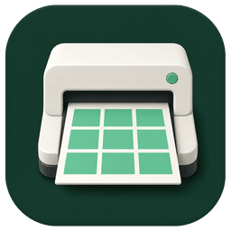

Impaginazione automatica
Distribuisce molte immagini evitando composizioni manuali ripetitive.
Batch Print Layout organizza automaticamente gruppi di immagini su fogli pronti per la stampa e riduce il tempo passato a comporre ogni pagina manualmente.

Distribuisce molte immagini evitando composizioni manuali ripetitive.
Prepara layout leggibili e coerenti con la destinazione di stampa.
Gestisce interi ordini senza ricominciare da una pagina vuota.
Dimensioni reali, ritaglio guidato e impaginazione automatica fino a 6 foto su un foglio 15×20 orizzontale.